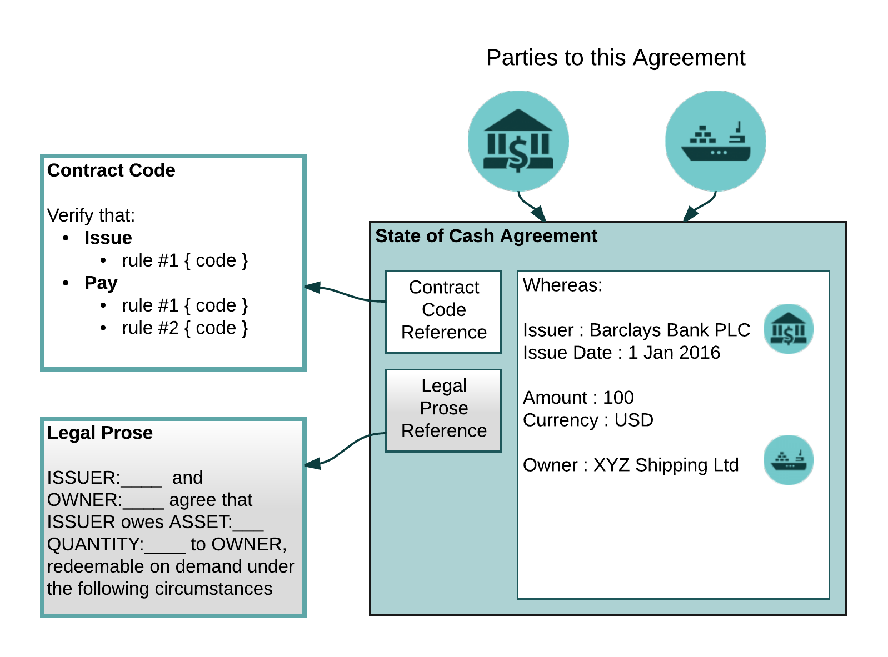

Data model¶
Overview¶
Corda uses the so-called “UTXO set” model (unspent transaction output). In this model, the database does not track accounts or balances. An entry is either spent or not spent but it cannot be changed. In this model the database is a set of immutable rows keyed by (hash:output index). Transactions define outputs that append new rows and inputs which consume existing rows.
The Corda ledger is defined as a set of immutable states, which are created and destroyed by digitally signed transactions. Each transaction points to a set of states that it will consume/destroy, these are called inputs, and contains a set of new states that it will create, these are called outputs. Although the ledger is shared, it is not always the case that transactions and ledger entries are globally visible. In cases where a set of transactions stays within a small subgroup of users it is possible to keep the relevant data purely within that group. To ensure consistency, we rely heavily on secure hashes like SHA-256 to identify things.
The Corda model provides the following additional features:
- There is no global broadcast at any point.
- States can include arbitrary typed data.
- Transactions invoke not only input contracts but also the contracts of the outputs.
- Contracts refer to a bundle of business logic that may handle various different tasks, beyond transaction verification.
- Contracts are Turing-complete and can be written in any ordinary programming language that targets the JVM.
- Arbitrarily-precise time-bounds may be specified in transactions (which must be attested to by a notary)
- Primary consensus implementations use block-free conflict resolution algorithms.
- Transactions are not ordered using a block chain and by implication Corda does not use miners or proof-of-work. Instead each state points to a notary, which is a service that guarantees it will sign a transaction only if all the input states are un-consumed.
Corda provides three main tools to achieve global distributed consensus:
- Smart contract logic to ensure state transitions are valid according to the pre-agreed rules.
- Uniqueness and timestamping services to order transactions temporally and eliminate conflicts.
- An orchestration framework which simplifies the process of writing complex multi-step protocols between multiple different parties.
Comparisons of the Corda data model with Bitcoin and Ethereum can be found in the white papers.
States¶
A state object represents an agreement between two or more parties, the evolution of which governed by machine-readable contract code. This code references, and is intended to implement, portions of human-readable legal prose. It is intended to be shared only with those who have a legitimate reason to see it.
The following diagram illustrates a state object:
In the diagram above, we see a state object representing a cash claim of £100 against a commercial bank, owned by a fictional shipping company.
Note
Legal prose (depicted above in grey-shade) is currently implemented as an unparsed reference to the natural language contract that the code is supposed to express (usually a hash of the contract’s contents).
States contain arbitrary data, but they always contain at minimum a hash of the bytecode of a contract code file, which is a program expressed in JVM byte code that runs sandboxed inside a Java virtual machine. Contract code (or just “contracts” in the rest of this document) are globally shared pieces of business logic.
Note
In the current code dynamic loading of contracts is not implemented. This will change in the near future.
Contracts¶
Contracts define part of the business logic of the ledger.
Corda enforces business logic through smart contract code, which is constructed as a pure function (called “verify”) that either accepts or rejects a transaction, and which can be composed from simpler, reusable functions. The functions interpret transactions as taking states as inputs and producing output states through the application of (smart contract) commands, and accept the transaction if the proposed actions are valid. Given the same transaction, a contract’s “verify” function always yields exactly the same result. Contracts do not have storage or the ability to interact with anything.
Note
In the future, contracts will be mobile. Nodes will download and run contracts inside a sandbox without any review in some deployments, although we envisage the use of signed code for Corda deployments in the regulated sphere. Corda will use an augmented JVM custom sandbox that is radically more restrictive than the ordinary JVM sandbox, and it will enforce not only security requirements but also deterministic execution.
To further aid writing contracts we introduce the concept of Clauses which provide a means of re-using common verification logic.
Transactions¶
Transaction are used to update the ledger by consuming existing state objects and producing new state objects.
A transaction update is accepted according to the following two aspects of consensus:
- Transaction validity: parties can ensure that the proposed transaction and all its ancestors are valid by checking that the associated contract code runs successfully and has all the required signatures
- Transaction uniqueness: parties can ensure there exists no other transaction, over which we have previously reached consensus (validity and uniqueness), that consumes any of the same states. This is the responsibility of a notary service.
Beyond inputs and outputs, transactions may also contain commands, small data packets that the platform does not interpret itself but which parameterise execution of the contracts. They can be thought of as arguments to the verify function. Each command has a list of composite keys associated with it. The platform ensures that the transaction has signatures matching every key listed in the commands before the contracts start to execute. Thus, a verify function can trust that all listed keys have signed the transaction, but is responsible for verifying that any keys required for the transaction to be valid from the verify function’s perspective are included in the list. Public keys may be random/identityless for privacy, or linked to a well known legal identity, for example via a public key infrastructure (PKI).
Note
Linkage of keys with identities via a PKI is only partially implemented in the current code.
Commands are always embedded inside a transaction. Sometimes, there’s a larger piece of data that can be reused across many different transactions. For this use case, we have attachments. Every transaction can refer to zero or more attachments by hash. Attachments are always ZIP/JAR files, which may contain arbitrary content. These files are then exposed on the classpath and so can be opened by contract code in the same manner as any JAR resources would be loaded.
Note that there is nothing that explicitly binds together specific inputs, outputs, commands or attachments. Instead, it’s up to the contract code to interpret the pieces inside the transaction and ensure they fit together correctly. This is done to maximise flexibility for the contract developer.
Transactions may sometimes need to provide a contract with data from the outside world. Examples may include stock prices, facts about events or the statuses of legal entities (e.g. bankruptcy), and so on. The providers of such facts are called oracles and they provide facts to the ledger by signing transactions that contain commands they recognise, or by creating signed attachments. The commands contain the fact and the signature shows agreement to that fact.
Time is also modelled as a fact and represented as a timestamping command placed inside the transaction. This specifies a time window in which the transaction is considered valid for notarisation. The time window can be open ended (i.e. with a start but no end or vice versa). In this way transactions can be linked to the notary’s clock.
It is possible for a single Corda network to have multiple competing notaries. A new (output) state is tied to a specific notary when it is created. Transactions can only consume (input) states that are all associated with the same notary. A special type of transaction is provided that can move a state (or set of states) from one notary to another.
Note
Currently the platform code will not automatically re-assign states to a single notary. This is a future planned feature.
Transaction Validation¶
When a transaction is presented to a node as part of a flow it may need to be checked. Checking original transaction validity is
the responsibility of the ResolveTransactions flow. This flow performs a breadth-first search over the transaction graph,
downloading any missing transactions into local storage and validating them. The search bottoms out at transactions without inputs
(eg. these are mostly created from issuance transactions). A transaction is not considered valid if any of its transitive dependencies are invalid.
Note
Non-validating notaries assume transaction validity and do not request transaction data or their dependencies beyond the list of states consumed.
The tutorial ” Writing a contract “provides a hand-ons walk-through using these concepts.
Transaction Representation¶
By default, all transaction data (input and output states, commands, attachments) is visible to all participants in a multi-party, multi-flow business workflow. Transaction tear-offs describes how Corda uses Merkle trees to ensure data integrity and hiding of sensitive data within a transaction that shouldn’t be visible in its entirety to all participants (eg. oracles nodes providing facts).